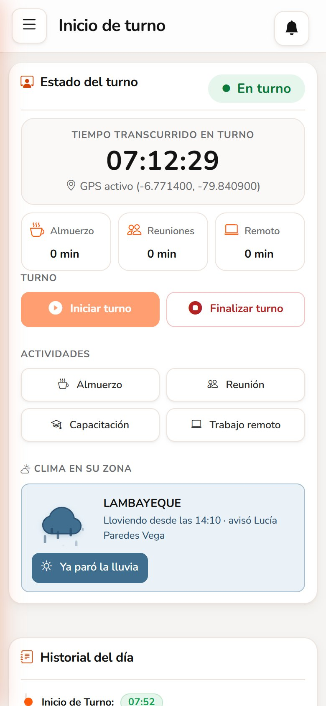
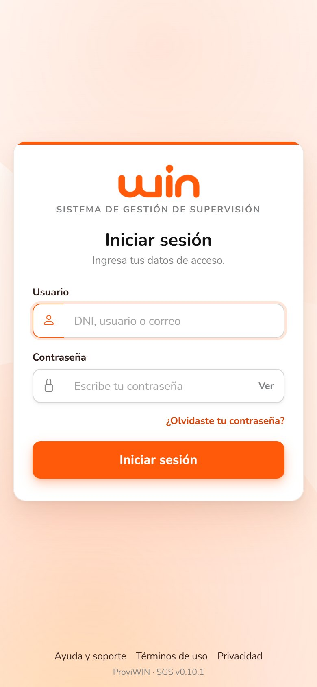
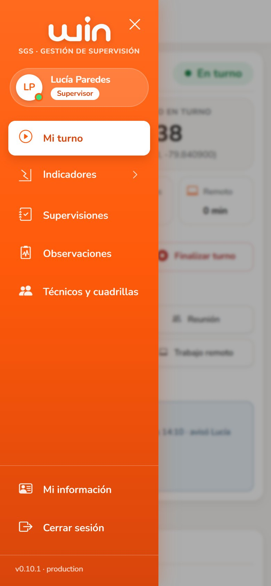
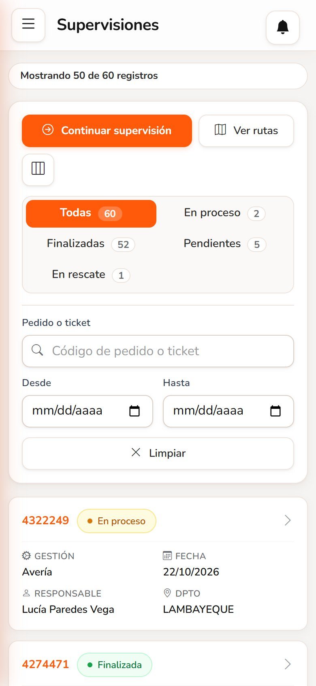
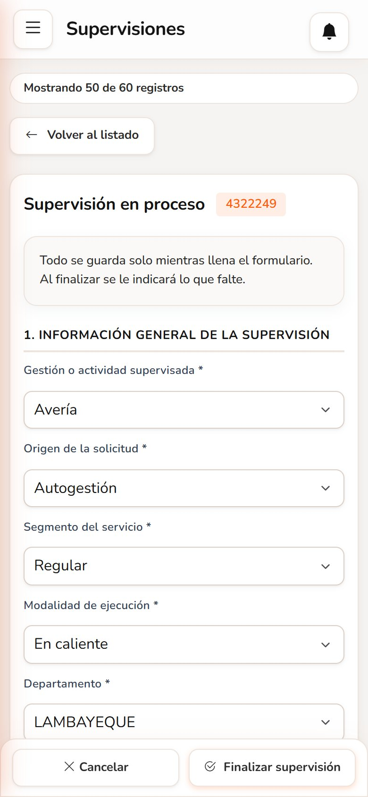
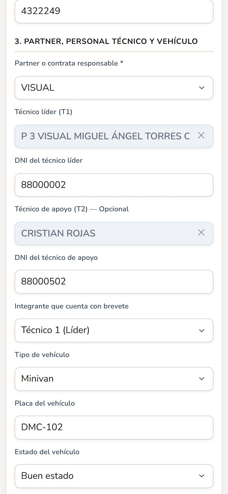
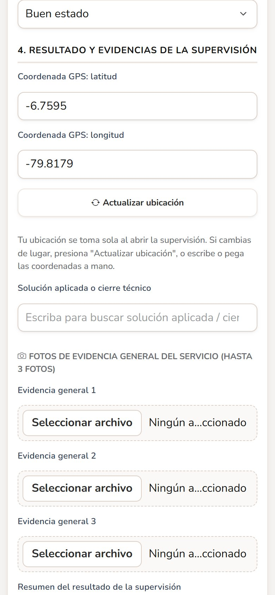
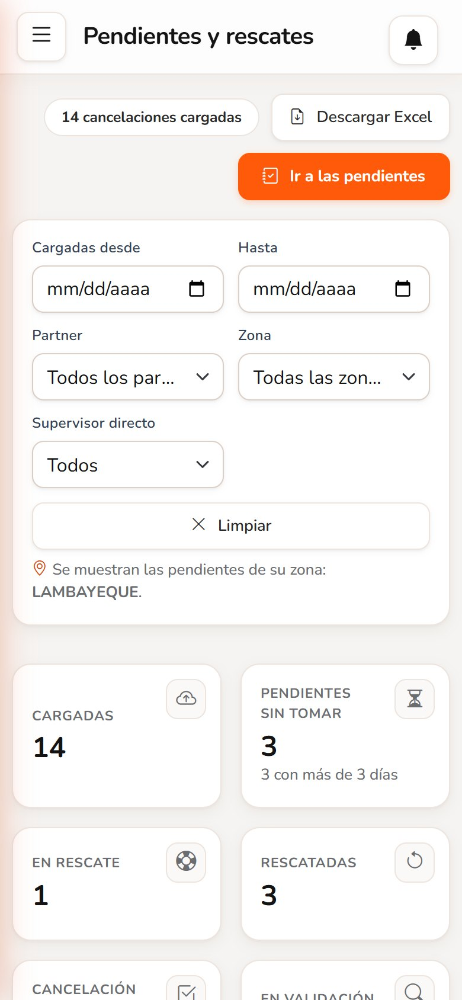
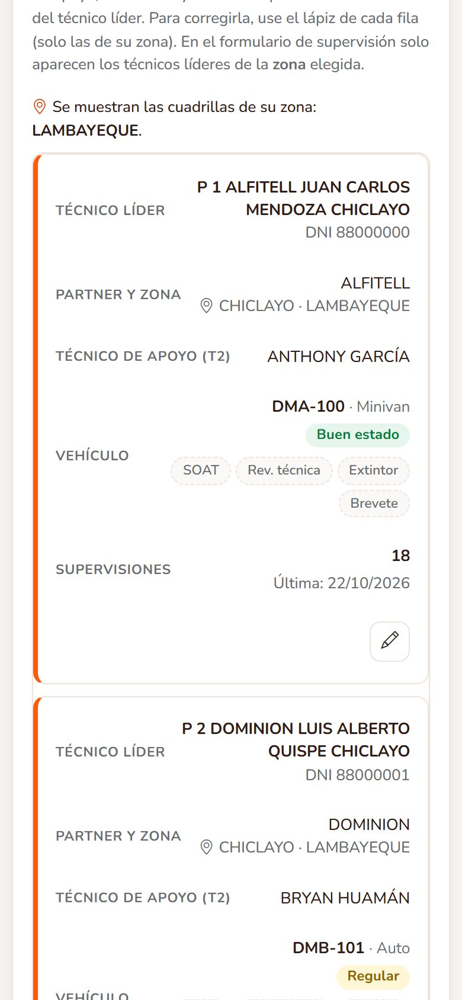
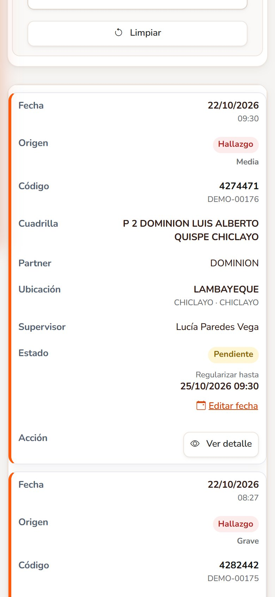

Todo el trabajo de campo desde el celular: turno, supervisiones, pendientes, cuadrillas, observaciones y clima.

Versión 0.10.1Octubre de 2026Uso interno · WIN
Su día en el sistema
1Ingresarcon su usuario o DNI.
2Iniciar turnocon el GPS encendido.
3Supervisaren campo: se guarda solo.
4Finalizarcon fotos y ubicación.
5Cerrar turnoal terminar la jornada.
①Sin turno no hay supervisión. Todo empieza en Mi turno.
②GPS encendido y con permiso para el sistema.
③Una supervisión a la vez: finalícela antes de iniciar otra.
Ingresar
Usuario: su DNI, usuario o correo.
El primer ingreso le pide crear su propia contraseña.
Tres intentos fallidos bloquean el usuario: pida al administrador que lo libere.
El menú
Se abre con ☰.
Mi turno · Indicadores · Supervisiones · Observaciones · Técnicos y cuadrillas.

Ingreso

Menú
1Mi turno y clima
Iniciar turno al empezar la jornada y Finalizar turno al terminar.
Registre almuerzo, reunión, capacitación o trabajo remoto. Al volver, Reanudar turno.
El tiempo del turno y de cada actividad se cuenta solo.
Clima en su zona
Si llueve, toque la nube o Está lloviendo.
Cuando pare: Ya paró la lluvia.
No cambia lo que está haciendo: el sistema anota solo su actividad (por ejemplo, Supervisando 4215032).
Si otro supervisor de su zona ya la avisó, lo verá en su tarjeta.
Turno en curso y lluvia avisada
2Supervisiones
Pestañas: Todas · En proceso · Finalizadas · Pendientes · En rescate.
Busque por pedido o ticket y filtre por fechas.
Nueva supervisión la abre al instante (con su zona ya puesta).
Si dejó una a medias, aparece Continuar supervisión.
Se guarda soloMientras llena el formulario, todo se guarda. Si se corta la señal, al volver continúa donde quedó.

Lista de trabajo
3Registrar la supervisión

1 · Datos generales

3 · Partner, técnicos y vehículo

4 · Ubicación y evidencias
Datos generales: actividad, origen, segmento, modalidad (en caliente, en frío o remota) y ubicación.
Orden: pedido o ticket.
Cuadrilla: al elegir el técnico líder (T1) se completan su apoyo (T2) y su vehículo. Para cambiar un técnico, toque el campo y elija otro o registre uno nuevo.
Evidencias: la ubicación se toma sola (también puede escribirla). Suba al menos una foto y el checklist.
Finalizar supervisión: el sistema le indica lo que falte.
4Pendientes y rescates
Las cancelaciones cargadas por Excel llegan a Pendientes de su zona.
Al tomar una, valide la cancelación: si es correcta se cierra; si se puede salvar, pasa a rescate.
También puede transferirla a un partner: tiene 24 horas para atenderla.
En Indicadores › Pendientes y rescates ve su avance: atendidas, rescatadas y tiempo de atención.

Indicador de pendientes
5Cuadrillas y observaciones
Técnicos y cuadrillas
Cada técnico líder con su apoyo, su vehículo y sus documentos (SOAT, revisión técnica, extintor, brevete).
Alertas de documentos vencidos o por vencer.
Puede corregir la cuadrilla de su zona con el lápiz.
Observaciones
Hallazgos de campo y de checklist con su plazo de descargo.
Estado de cada una: pendiente, respondida, validada o penalizada.

Cuadrillas

Observaciones
¿Necesita ayuda? Contraseña olvidada, usuario bloqueado o zona incorrecta: comuníquese con el administrador del sistema.